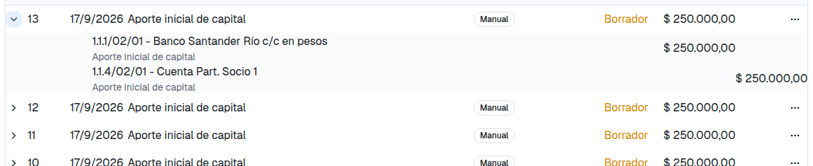
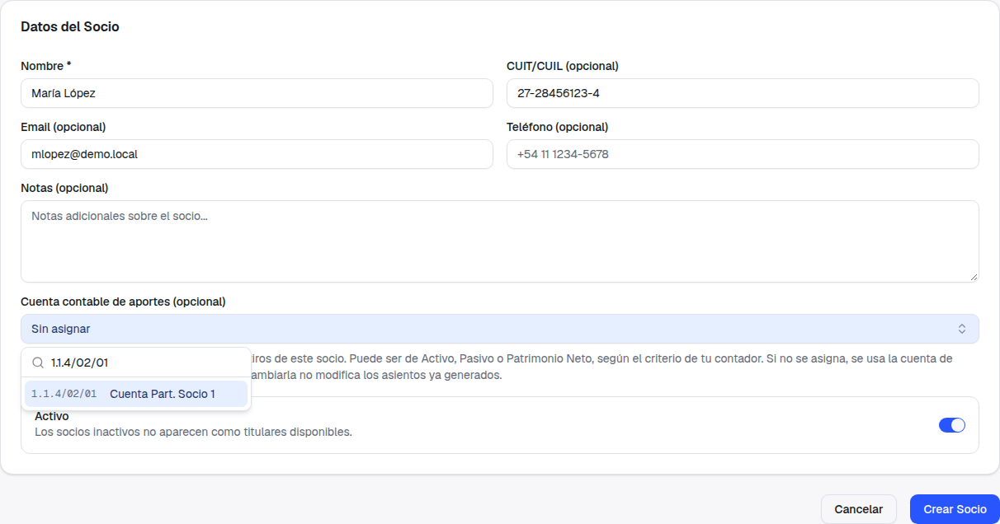
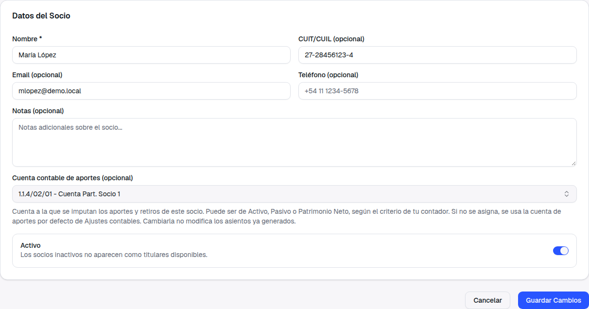
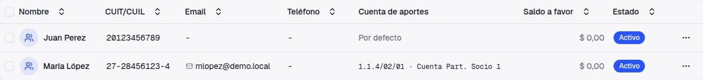
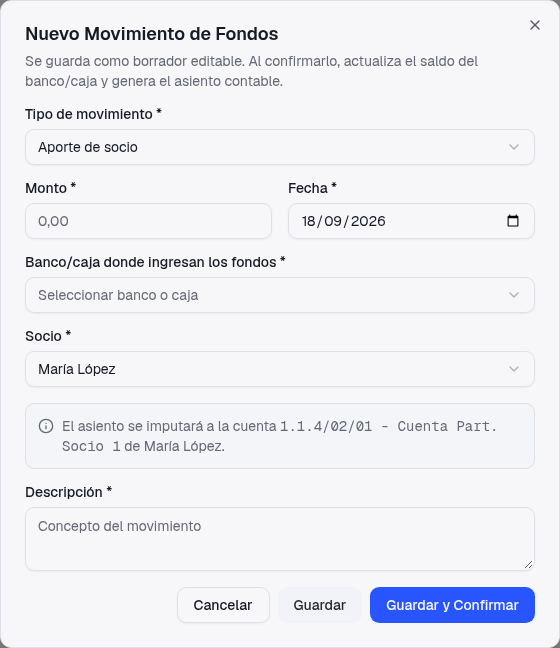
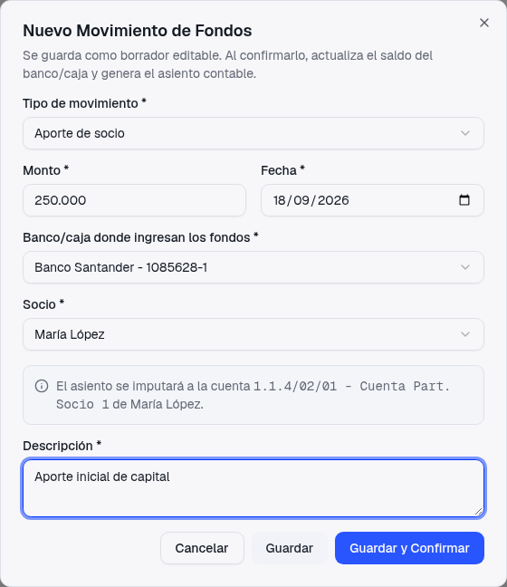
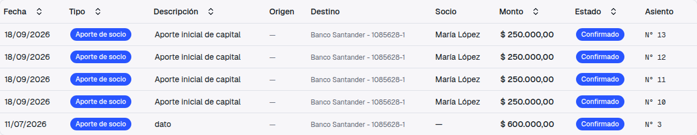
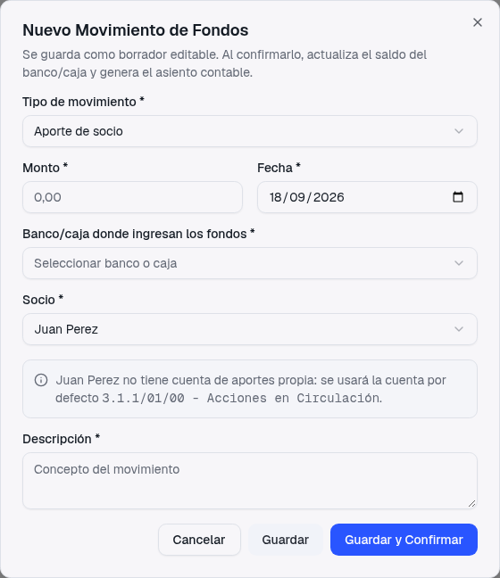
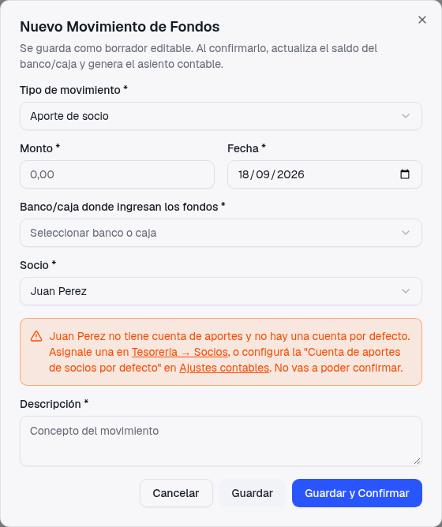
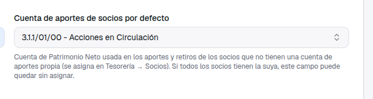

Guía de presentación — qué pedías, qué cambió y cómo usarlo
Lo primero que hiciste al arrancar con PMS fue cargar la plata que cada socia puso en el banco. Lo contaste así en el ticket 413:
Y en el 706, cuando el saldo del banco no te daba, volviste sobre lo mismo:
Qué pasaba. El aporte de socio ya existía en Tesorería → Movimientos de Fondos, y al confirmarlo sí actualizaba el saldo del banco. Pero contablemente todos los aportes iban a una sola cuenta, la que estaba configurada en Ajustes contables, sin importar qué socia había puesto la plata. Elegir la socia en el formulario era un dato informativo: quedaba anotado en el movimiento, pero el asiento no la miraba. Así no había forma de ver en el Mayor cuánto aportó cada una.
Una única Cuenta de Aportes de Socios para toda la empresa. El aporte de cualquier socia se imputaba ahí. La socia era opcional en el formulario y no intervenía en el asiento.
Cada socia puede tener su propia cuenta contable de aportes, elegida en su ficha de Socios. Al confirmar un aporte o retiro, el asiento va a la cuenta de esa socia. La socia pasa a ser obligatoria, y el formulario te dice de antemano a qué cuenta va a ir.

Son tres momentos: asignarle la cuenta a cada socia (una sola vez), cargar el aporte, y confirmarlo para ver el asiento.


Al guardar, el listado de Socios muestra la columna Cuenta de aportes: de un vistazo ves quién tiene la suya y quién sigue en Por defecto.




Antes se podía cargar un aporte "sin socio". Ya no: para un Aporte de socio o un Retiro de socio hay que elegir a la persona, porque de eso depende a qué cuenta va el asiento. Si tenías algún aporte guardado en borrador sin socia, al querer confirmarlo el sistema te va a pedir que lo edites y elijas una. Las transferencias entre cuentas y los gastos bancarios no piden socio, igual que antes.
La cuenta que hasta hoy usaban todos los aportes sigue existiendo, ahora como Cuenta de aportes de socios por defecto. Cuando elegís una socia que no tiene cuenta asignada, el aviso te lo dice antes de guardar, y el aporte se imputa ahí. Nada se pierde: en el listado de Socios esa persona figura como "Por defecto" para que la detectes fácil.

Si la socia no tiene cuenta y además el campo de Ajustes contables está vacío, el aviso se pone naranja y te dice exactamente dónde resolverlo, con un link a la ficha de la socia y otro a Ajustes contables. Podés guardar el borrador, pero no confirmarlo hasta que una de las dos cuentas exista. Es a propósito: el sistema no imputa a cualquier lado por no tener a dónde.

No te limitamos a Patrimonio Neto. En el buscador de la ficha de la socia aparecen todas las cuentas imputables de Activo, Pasivo y Patrimonio; solo quedan afuera las de Ingresos y Egresos. Cuál usar es criterio de tu contador: en el ejemplo usamos "Cuenta Part. Socio 1" (una cuenta de Activo que ya viene en el plan de cuentas), pero igual de válido es "Aportes Irrevocables" o una cuenta propia por socia creada bajo "Capital Social".
Si la cuenta que querés usar no existe todavía, creala primero en Contabilidad → Plan de Cuentas, eligiendo la cuenta madre. El sistema no crea cuentas solo; prefiere que el plan lo arme tu contador.
Si más adelante le cambiás la cuenta a una socia, los asientos que ya se generaron quedan como están, en la cuenta que tenían en ese momento. Solo los aportes y retiros nuevos usan la cuenta nueva. Un asiento es historia; no se reescribe por un cambio de configuración. Lo mismo dice el texto de ayuda de la ficha, para que no te sorprenda.
Esto no es nuevo de este cambio, pero es muy probable que sea la razón de fondo por la que "no te llenaba el banco" en el 706, así que lo dejamos por escrito.
Cuando confirmás un movimiento de fondos, pasan dos cosas distintas:
El Mayor y el Balance solo suman los asientos Registrados. Mientras el asiento del aporte esté en Borrador, la cuenta contable del banco no lo refleja, aunque el saldo de tesorería sí. Por eso podía parecer que el aporte "no llenaba el banco": la plata estaba, pero el asiento no estaba registrado.
Entrá a Contabilidad → Asientos, ubicá el asiento (podés ordenar por la columna Estado para juntar los Borradores, o buscar el número que te dio el movimiento de fondos) y en el menú (…) de la fila elegí Registrar. Desde ese momento el Mayor de la cuenta de la socia y el de la cuenta del banco lo suman.
Si ya cargaste varios aportes y el saldo contable del banco no te cierra, revisá primero cuántos asientos tenés en Borrador: casi seguro la diferencia está ahí.
Una aclaración menor: si en el listado de Asientos ves la fecha de un aporte corrida un día para atrás respecto de la fecha que cargaste, ya lo tenemos identificado; es un tema de cómo se muestra la fecha en ese listado, no del asiento ni del movimiento, y se corrige aparte.
